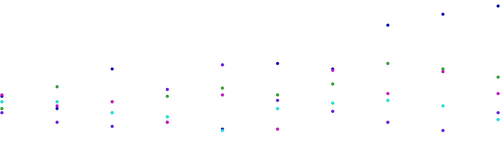

For this analysis, I chose to take a step back and look at Greek mythology from a purely numerical perspective. I began by using Voyant to look at a translation of The Odyssey, one of the most widely read texts about Greek myths. While doing that, I looked at much of the data, but this graph stood out to me.
Two things stood out to me in particular. The first was the frequency of the name “Ulysses.” At first glance, this did not surprise me, because the text is about that particular hero. Then the implication hit me: Ulysses is his Roman name, while The Odyssey is supposed to be Greek; it’s supposed to be about Odysseus, not Ulysses. This raised an interesting concern about translation that, in a later project, I may explore further. The second thing that I noticed was the lack of prevalence of the gods, even in their Roman names. This was something that I had expected to see, as part of The Odyssey is Odysseus crossing the gods and needing to get home despite their interference. This made me curious about the prevalence of the gods in other prominent texts of the time. This led to me include The Iliad and Theogony, to see what trends appeared. Below are demonstrations of just some of the data I gathered.
This snippet provides an overview of the three texts that I have input into the system. Some of the data, such as the vocabulary density, is not appropriately reflective due to the fact that these texts vary in length so drastically as seen here:
This data would be more strongly considered if I were to make each of these texts more comparable in length, and even then I would still take that type of analysis with a grain of salt. However, it was the portion of the summary that talked about the most common words in the corpus that stood out to me. I then moved over to the trends tool to get a visualization of the five most common words in these three texts and in which texts they were most prevalent.
Here we see the frequency trends of the five most common words in The Iliad, The Odyssey, and Theogony: Ulysses, great, son, shall, and said (not necessarily in that order). While it’s tough to draw some specific conclusions about the texts based on this, there are some interesting analyses that can be drawn. First, to point out the obvious, the most frequent word in The Odyssey is “Ulysses”; this is not surprising since Ulysses is the protagonist of the story. In comparison, Ulysses shows up much less frequently in The Iliad, since the story there was about other people and other events, and he basically does not show up at all in Theogony.
Second, the second most common word in The Odyssey is “said,” which indicated to me that, as frequent as Ulysses is, there is also a lot of dialogue and conversation within The Odyssey to a level that we do not see in the other two texts, though Theogony has a fair bit of “said,” which means that there is more being “said” explicitly in both The Odyssey and Theogony than in The Iliad, which may make sense when you consider the militaristic focus in The Iliad on the Trojan War.
The other frequent words, though interesting, are more difficult to draw distinct conclusions from without more context as to how they are used. That said, I believe that there is a lot to learn from the base data that has been presented here about the goals of these three Greek Mythology texts that I can ascertain that my initial hypothesis, which expected a much higher presence of the gods, was wrong and that, despite my thoughts, the gods may not have been as important to the stories as I initially believed.